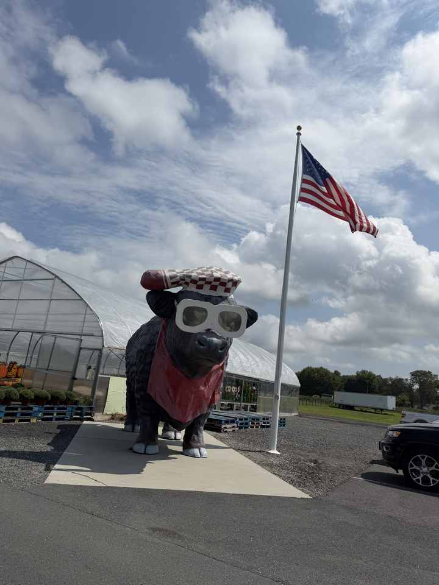
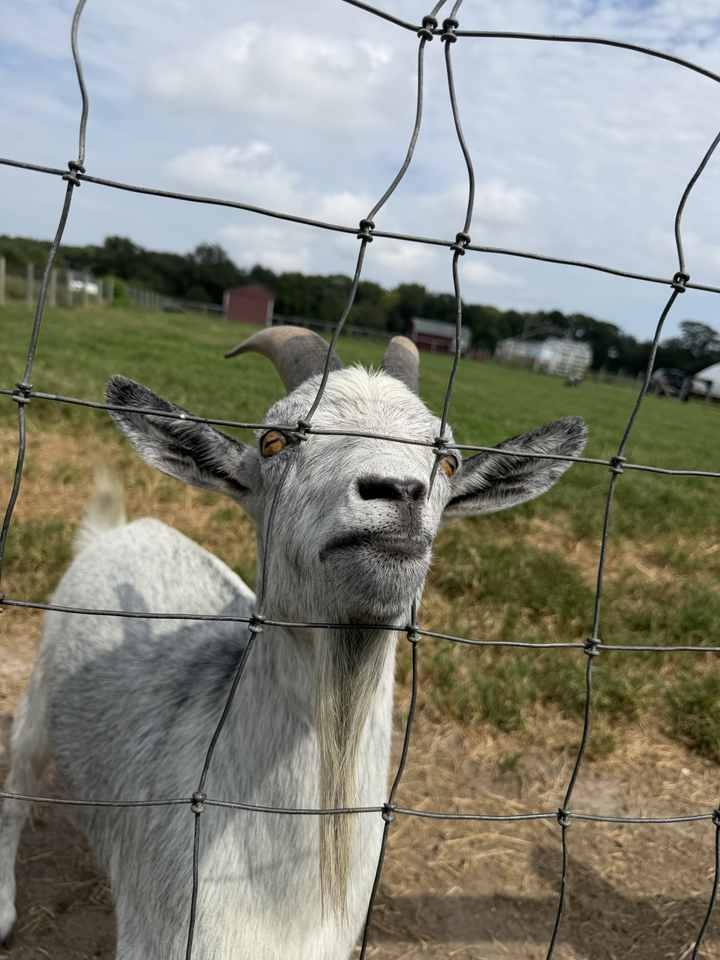
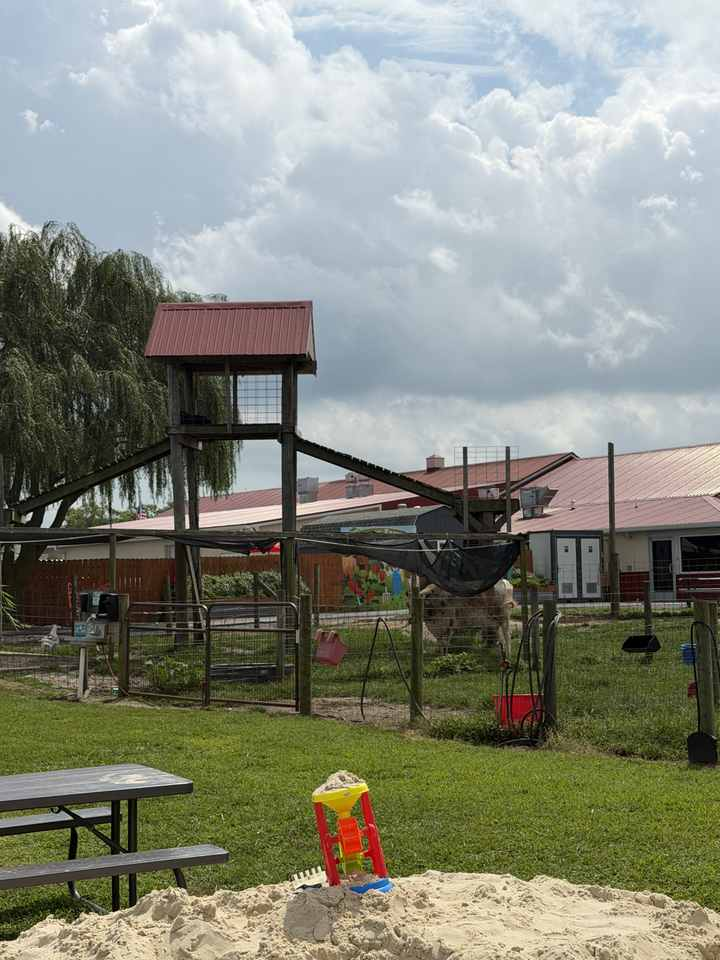

Parsons Farms is the kind of place that fits DBF’s broader Delaware map: not a resort attraction, not a museum, just a working local stop that rewards pulling over.
The farm describes itself as a fifth-generation family-owned operation with local produce, a Country Store and café. Out back, its animal area includes the feature it calls “Goat Mountain.” Visiting the animals is free; feed is available for purchase.
This is exactly the kind of inland Sussex County detour worth keeping in your pocket when the beach day needs a second act.



Sources: Parsons Farms Produce and its visitor information.